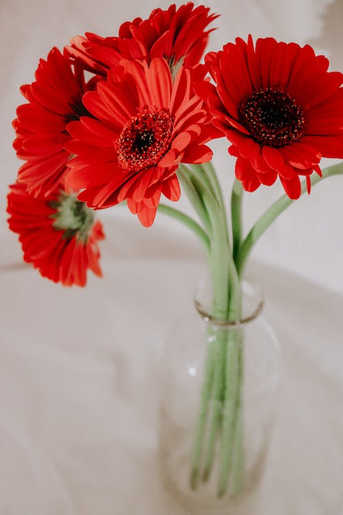

Cuidados com os Buquês
Corte as hastes em um ângulo antes de colocar o buquê na água, isso permite que as flores absorvam mais água.
Troque a água do vaso regularmente para manter as flores frescas e livres de bactérias.
Remova folhas e flores murchas do buquê para evitar que elas liberem substâncias prejudiciais para as flores restantes.
Coloque o buquê em um local fresco e longe de luz solar direta para prolongar sua durabilidade.
Cuidados com as Mudas
Plante as mudas em solo bem drenado e rico em nutrientes.
Mantenha o solo úmido, mas não encharcado, para ajudar no desenvolvimento das raízes.
Proteja as mudas de temperaturas extremas e ventos fortes.
Faça adubação adequada para promover o crescimento saudável das mudas.
Cuidados com as Flores
Mantenha as flores longe de correntes de ar, calor excessivo e luz solar direta.
Corte as hastes em um ângulo antes de colocar as flores em um vaso com água limpa.
Adicione conservantes de flores à água do vaso para prolongar a vida das flores.
Remova folhas submersas na água para evitar o crescimento de bactérias.

Cuidados com os Vasos
Escolha vasos adequados para cada tipo de planta, garantindo que tenham drenagem para evitar o acúmulo de água.
Adube regularmente para fornecer os nutrientes necessários para o crescimento saudável das plantas.
Verifique a umidade do solo e regue as plantas quando necessário, evitando tanto o excesso quanto a falta de água.
Limpe os vasos regularmente para evitar o acúmulo de sujeira e bactérias.